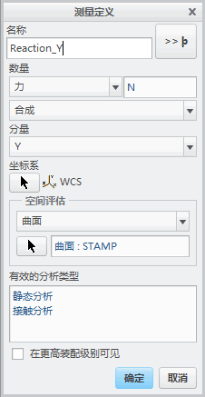
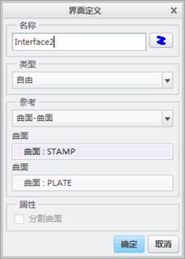
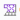
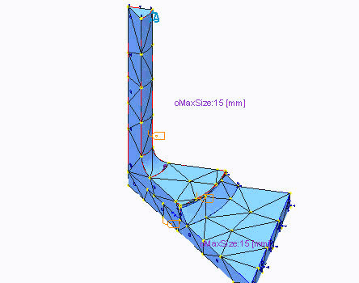
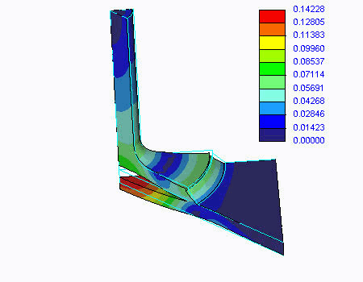

过程: 审阅界面
“关闭窗口”(Close Window)
 “拭除未显示的”(Erase Not Displayed)
“拭除未显示的”(Erase Not Displayed) 
 Simulate_Modeling\Interfaces
Simulate_Modeling\Interfaces
 WELDED_JOINT_SIMULATE.ASM
WELDED_JOINT_SIMULATE.ASM
|
|
||
 |
Creo Parametric 用户打开 WELDED_JOINT.ASM | |
|
|
||
-
任务 1. 在模型中审阅温度载荷。
1. 在模型树中，展开载荷/约束和载荷集 LoadSet1。
2. 右键单击 Load1，然后选择“编辑定义”(Edit Definition)。将出现“结构温度载荷”(Structural Temperature Load) 对话框。
3. 审阅载荷信息，然后单击“确定”(OK)。
-
任务 2. 定义合力测量。
1. 在功能区中，选择“主页”(Home) 选项卡。
2. 在“运行”(Run) 组中单击“测量”(Measures)
 。将出现“测量”(Measures) 对话框。
。将出现“测量”(Measures) 对话框。
3. 单击“新建”(New)。将出现“测量定义”(Measure Definition) 对话框。
4. 完成“测量定义”(Measure Definition) 对话框，如图所示。在“空间评估”(Spatial Evaluation) 部分中选择“曲面”(Surfaces) 后，单击“选择参考”(Select Reference)
 并在模型中选择“曲面:F8(REVOLVE_1):STAMP”(Surf:F8(REVOLVE_1):STAMP)。
并在模型中选择“曲面:F8(REVOLVE_1):STAMP”(Surf:F8(REVOLVE_1):STAMP)。
5. 单击“确定”(OK) 返回到“测量”(Measures) 对话框。
6. 单击“关闭”(Close)。

-
任务 3. 定义自由界面连接。
1. 在功能区中，选择“精细模型”(Refine Model) 选项卡。
2. 从“连接”(Connections) 组中单击“界面”(Interface) 。将出现“界面定义”(Interface Definition) 对话框。
3. 完成对话框，如图所示。对于这两个曲面参考，以任何顺序选择 PLATE.PRT 的顶部曲面和 STAMP.PRT 的底部曲面。
4. 单击“确定”(OK)。

-
任务 4. 网格化模型。
1. 在功能区中，选择“精细模型”(Refine Model) 选项卡。
2. 在 AutoGEM 组中从“控制类型”(Control Types) 下拉菜单中选择“最大元素尺寸”(Maximum Element Size) 。将出现“最大元素尺寸控制”(Maximum Element Size Control) 对话框。
3. 在“参考”(References) 部分中，从下拉菜单中选择“分量”(Components)。
4. 在模型树中，按住 CTRL 键并选择 PLATE.PRT 和 STAMP.PRT。
5. 在“元素尺寸”(Element Size) 字段中键入 15。
6. 单击“确定”(OK)。
7. 从 AutoGEM 组中单击AutoGEM 。将出现 AutoGEM 对话框。
8. 单击“创建”(Create)。网格已被创建，如图所示。

9. 检查网格并注意没有公用节点在所包含零件的共享自由界面连接的曲面上被创建。在其他地方有公用节点。
10. 在所有对话框中单击“关闭”(Close) 以返回到 AutoGEM 对话框。
11. 在 AutoGEM 对话框中，单击“关闭”(Close)。
12. 提示保存网格时单击“否”(No)。
-
任务 5. 定义并运行静态分析。
1. 在功能区中，选择“主页”(Home) 选项卡。
2. 在“运行”(Run) 组中单击“分析和研究”(Analyses and Studies)
 。将出现“分析和设计研究”(Analyses and Design Studies) 对话框。
。将出现“分析和设计研究”(Analyses and Design Studies) 对话框。
3. 单击“文件”(File) > “新建静态分析”(New Static)。将出现“静态分析定义”(Static Analysis Definition) 对话框。
4. 在“名称”(Name) 字段中键入 Welded_Joint_Free。保持所有其他默认设置。
5. 单击“确定”(OK)。
6. 选择刚定义的“分析”(Analysis)，然后单击“开始运行”(Start Run)
 。
。
7. 单击“是”(Yes) 以运行交互诊断。
8. 单击“显示研究状况”(Display Study Status)
 以监视分析进度。
以监视分析进度。
9. 检查显示在“运行状况”(Run Status) 对话框中的信息。标识最大位移模。同样，在摘要文件中标识已定义的合成测量 Reaction_Y。
10. 在“运行状况”(Run Status) 对话框中，单击“关闭”(Close)。
11. 在“诊断”(Diagnostics) 对话框中，单击“关闭”(Close)。
-
任务 6. 创建结果窗口并检查结果。
1. 单击“结果”(Results) > “定义结果窗口”(Define Result Window)。将出现“结果窗口定义”(Result Window Definition) 对话框。
2. 完成对话框，如图所示。
3. 单击“确定并显示”(OK and Show)。

4. 审阅出图。检查变形并注意板被焊接连在一起。
5. 单击“文件”(File) > “退出结果”(Exit Results)。
6. 在系统提示您保存当前结果窗口时，单击“否”(No)。
7. 在“分析和设计研究”(Analyses and Design Studies) 对话框中，单击“关闭”(Close)。
8. 单击“文件”(File) > “管理会话”(Manage Session) > “拭除当前”(Erase Current)。
9. 单击“确定”(OK) 以响应“拭除确认”(Erase Confirm) 提示。
过程就此结束。